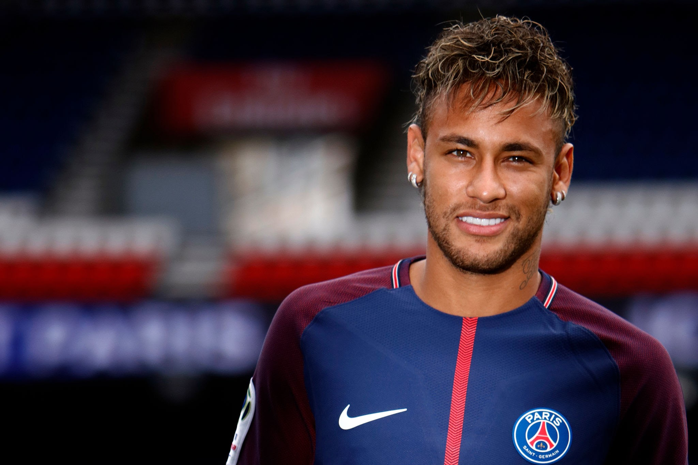

Meu primeiro post

Neymar da Silva Santos Júnior, nascido em 5 de fevereiro de 1992 em Mogi das Cruzes (SP), é um dos futebolistas brasileiros mais destacados e influentes do século XXI. Início no Santos (2009–2013): Revelado nas categorias de base do Santos Futebol Clube, ganhou projeção mundial ainda jovem pelo estilo de jogo ousado e habilidoso. No clube paulista, conquistou a Copa do Brasil de 2010 e a Copa Libertadores de 2011. Passagem pelo Barcelona (2013–2017): Transferiu-se para o futebol europeu para atuar no Barcelona, onde formou o trio de ataque "MSN" ao lado de Lionel Messi e Luis Suárez. Venceu a Liga dos Campeões da UEFA e o Mundial de Clubes em 2015, além de dois títulos do Campeonato Espanhol. Paris Saint-Germain e Al-Hilal (2017–presente): Em 2017, protagonizou a transferência mais cara da história do futebol ao se transferir para o Paris Saint-Germain (PSG). Pelo clube francês, conquistou múltiplos títulos nacionais. Posteriormente, transferiu-se para o Al-Hilal, da Arábia Saudita. Seleção Brasileira: Principal referência da Seleção na década de 2010, conquistou a medalha de ouro inédita nos Jogos Olímpicos do Rio 2016 e a Copa das Confederações de 2013, tornando-se também o maior artilheiro em jogos oficiais da história da equipe nacional.